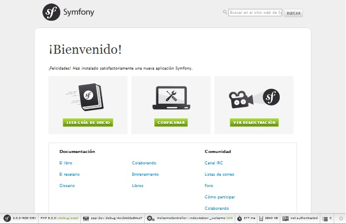

El objetivo de este capítulo es el de empezar a trabajar con una aplicación funcionando incorporada en lo alto de Symfony. Afortunadamente, Symfony dispone de “distribuciones”, que son proyectos Symfony funcionales desde el “arranque”, los cuales puedes descargar y comenzar a desarrollar inmediatamente.
Tip
En primer lugar, comprueba que tienes instalado y configurado un servidor web (como Apache) con PHP 5.3.2 o superior. Para más información sobre los requisitos de Symfony2, consulta la referencia de requisitos.
Los paquetes de las “distribuciones” de Symfony2, son aplicaciones totalmente funcionales que incluyen las bibliotecas del núcleo de Symfony2, una selección de útiles paquetes, una sensible estructura de directorios y alguna configuración predeterminada. Al descargar una distribución Symfony2, estás descargando el esqueleto de una aplicación funcional que puedes utilizar inmediatamente para comenzar a desarrollar tu aplicación.
Empieza por visitar la página de descarga de Symfony2 en http://symfony.com/download. En esta página, puedes encontrar la Edición estándar de Symfony, que es la distribución principal de Symfony2. En este caso, necesitas hacer dos elecciones:
Descarga uno de los archivos en algún lugar bajo el directorio raíz de tu servidor web local y descomprímelo. Desde una línea de ordenes de UNIX, esto se puede hacer con una de las siguientes ordenes (sustituye ### con el nombre de archivo real):
# para un archivo .tgz
tar zxvf Symfony_Standard_Vendors_2.0.###.tgz
# para un archivo .zip
unzip Symfony_Standard_Vendors_2.0.###.zip
Cuando hayas terminado, debes tener un directorio Symfony/ que se ve algo como esto:
www/ <- tu directorio raíz del servidor web
Symfony/ <- el archivo extraído
app/
cache/
config/
logs/
src/
...
vendor/
...
web/
app.php
...
Por último, si descargaste el archivo “sin vendors”, instala tus proveedores ejecutando el siguiente método desde la línea de ordenes:
php bin/vendors install
Esta orden descarga todas las bibliotecas de terceros necesarias - incluyendo al mismo Symfony - en el directorio vendor/.
En este punto, todas las bibliotecas de terceros necesarias ahora viven en el directorio vendor/. También tienes una instalación predeterminada de la aplicación en app/ y algunos ejemplos de código dentro de src/.
Symfony2 viene con una interfaz visual para probar la configuración del servidor, muy útil para ayudarte a solucionar problemas relacionados con la configuración de tu servidor web y PHP para utilizar Symfony. Usa la siguiente URL para examinar tu configuración:
http://localhost/Symfony/web/config.php
Si hay algún problema, corrígelo antes de continuar.
Cuando todo esté listo, haz clic en el enlace “Visita la página de Bienvenida” para ver tu primer aplicación “real” en Symfony2:
http://localhost/Symfony/web/app_dev.php/
¡Symfony2 debería felicitarte por tu arduo trabajo hasta el momento!
Ahora que tienes una aplicación Symfony2 completamente funcional, ¡puedes comenzar el desarrollo! Tu distribución puede contener algún código de ejemplo - comprueba el archivo README.rst incluido con la distribución (ábrelo como un archivo de texto) para saber qué código de ejemplo incluye tu distribución y cómo lo puedes eliminar más tarde.
Si eres nuevo en Symfony, alcánzanos en “Creando páginas en Symfony2”, donde aprenderás a crear páginas, cambiar la configuración, y todo lo demás que necesitas en tu nueva aplicación.
Si estás utilizando un sistema de control de versiones como Git o Subversion, puedes configurar tu sistema de control de versiones y empezar a consignar el proyecto de manera normal. Para Git, se puede hacer fácilmente con la siguiente orden:
git init
Para más información sobre la configuración y uso de Git, echa un vistazo a las guías del Campamento de inicio GitHub.
Si descargaste el archivo “sin vendors”, puedes ignorar con seguridad todo el directorio vendor/ y no consignarlo al control de código fuente. Con Git, esto se logra creando un archivo .gitignore y añadiendo lo siguiente:
vendor/
Ahora, el directorio de proveedores no será consignado al control de código fuente. Esto está muy bien (en realidad, ¡es genial!) porque cuando alguien más clone o coteje el proyecto, él/ella simplemente puede ejecutar el archivo php bin/vendors.php para descargar todas las bibliotecas de proveedores necesarias.